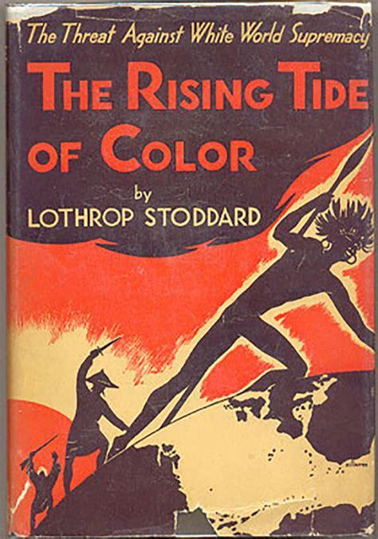
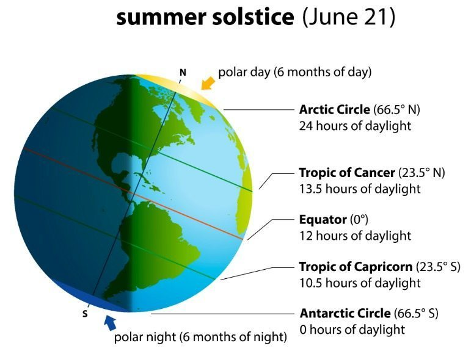
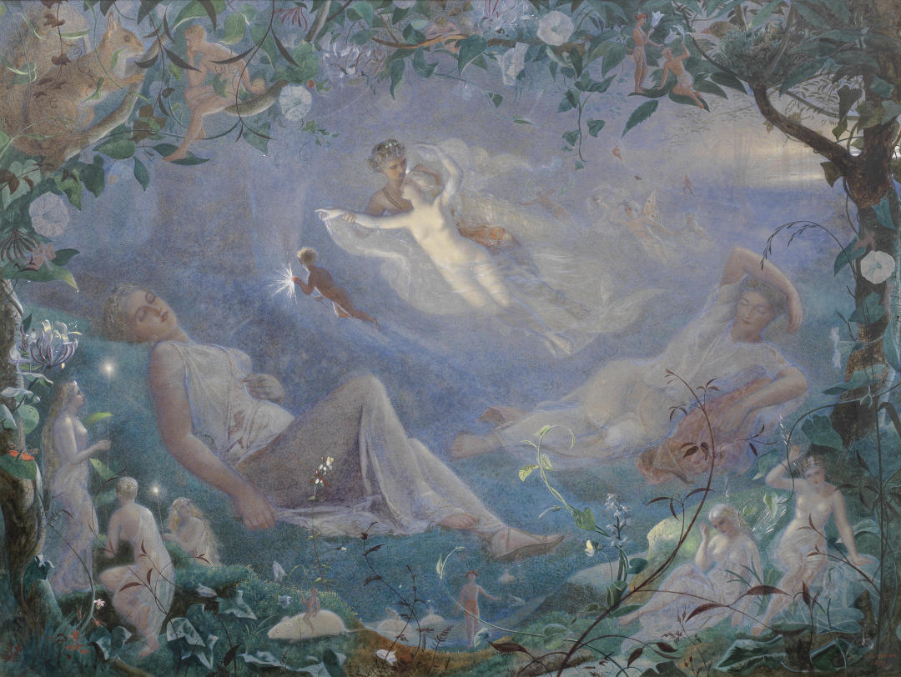
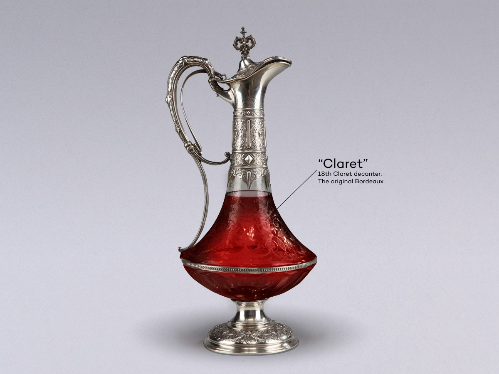
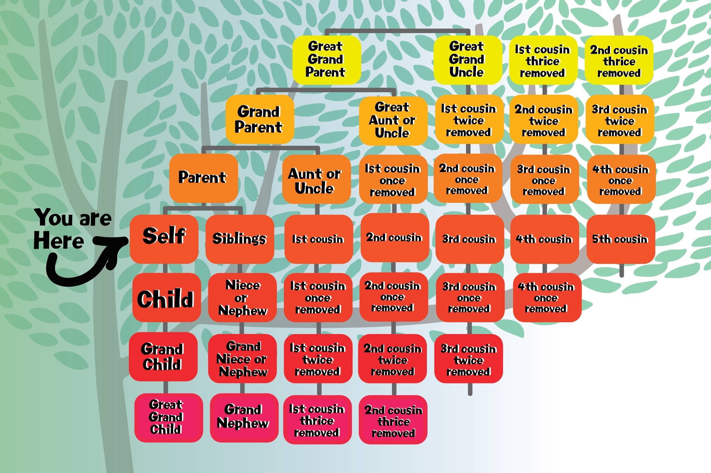

chapter1.4--handout
Background Information
‘The Rise of the Colored Empires’(《黑色帝国的崛起》)
Tom提到自己正在看的一本书：The Rise of the Colored Empires, 其实这里不是作者虚构的哦，当时的确出版了这样一本书，只是名字稍有不同——The Threat Against White World Supremacy—The Rising Tide of Color (by T. Lothrop Stoddard). 这本书主要是对一战后非白人种族人数的大量增加提出担忧（surveying the world racial situation after World War I and warning of the coming non-White population explosion）.

那么作者为什么要安插这个情节呢？首先Tom在这里无疑是卖弄自己的学识涵养，表明自己并不是除了橄榄球就一无是处；另一方面也借此展现了当时白人的种族歧视主义。比如在Tom看来，只有北欧血统是最为高贵的（the Nordic）——“This idea is that we’re Nordics. I am, and you are, and you are, and ——”
Summer Solstice Tradition(夏至日的传统)
晚餐的时候，Daisy提起如何庆祝一年中白昼最长的日（“What’ll we plan?” She turned to me helplessly: “What do people plan?”），虽然以往她总是守候着又错过。（“I always watch for the longest day in the year and then miss it.”）
这里所说的the longest day in the day其实就是夏至日（Summer Solstice），在北半球一般是6月21日，也就是太阳正好直射在北回归线上，这个时候在南半球就是冬至日了（Winter Solstice）. Solstice这个词源自拉丁文， sol即sun, stice即stare, sistere (to stand or stop).

所以一个普通的天文现象（an astronomical occasion）为什么变成了节日呢？这其实有很长的历史和文化渊源。
对于希腊人来说，夏至日是庆祝新年的伊始，而且是奥林匹克一个月倒计时的起点（the month-long countdown toward the Olympics）. 在这一天，人们还会向掌管农作物的天神克洛诺斯（Cronus）献祭，奴隶也被允许以平等的身份参加这个庆祝活动。
在罗马，这一天则是维斯塔节（the festival of Vesta）的开始，Vesta是古罗马掌管灶火和家庭的神（the goddess of hearth and home）, 已婚妇女只有在这一天才能到供奉女灶神的神殿里献上祭品（to make offerings to Vesta）来乞求家事平安。
而在欧洲的异教传统里，据说在这天晚上如果足够幸运的话还可能会看到仙子仙女们, 因为他们只会在仲夏这一天向凡人现身（favoring midsummer to reveal themselves to the common folk）. 莎士比亚最得意的一部喜剧 A Midsummer Night's Dream（《仲夏夜之梦》）就是设定在仲夏这一天，而这个故事里的眷侣们就是因为一位叫Puck的淘气精灵（sprite）从中捣乱才演变出一场闹剧，但最后还是在恶作剧中重建了美好姻缘。

现在的夏至日人们多以各种狂欢形式来庆祝，原本的历史文化氛围已经很淡了。这里对于Daisy来说，节日是她无聊挥霍的生活里唯一值得寄予期待的，她总是希望着能有什么欢愉和纪念，虽然最后可能又会像往常一样的错过。
Vocabulary
wan
💧adj. 苍白无力的；无血色的；憔悴的（looking pale, weak, or tired）
💧原文：Her gray sun-strained eyes looked back at me with polite reciprocal curiosity out of a wan, charming, discontented face.
她那双被太阳照得眯缝着的灰眼睛也看着我，一张苍白、可爱、不满的脸上流露出有礼貌的、回敬的好奇心。
💧wan在这里作形容词，形容苍白憔悴的（pale and tired），比如：
She gave me a wan smile.
她勉强向我微微一笑。
💧wan和wane由于在拼写上很相像所以容易弄混，wane一般作动词，表示“（月亮的）缺，亏”，和wax（盈）相对，wax and wane 就是“盈亏”；这个短语经常引申用于表示事物的“兴衰枯荣，盛衰”，比如：
Interest in the show has waxed and waned.
人们对这个节目曾经颇有兴趣，现已热情不再。
wedge
💧vt. 将…挤入（或塞进、插入） （to force something firmly into a narrow space）
💧原文：...wedging his tense arm imperatively under mine, Tom Buchanan compelled me from the room...
汤姆·布坎农不由分说就把一只肌肉紧绷的胳臂插在我的胳臂下面，把我从屋子里推出去……
💧wedge表示“嵌入，塞进”，在这里指Tom把自己的胳膊架在Nick的胳膊下。这个动词的含义是从它的名词“楔子，楔形物”引申出来的。木制或其他材料的楔子可以塞在门缝下作“门档”，金属的楔子可以用来劈开木头，还有“一角奶酪/蛋糕”也是说 a wedge of cheese/cake.
💧wedge作名词还可以表示“（关系上的）间隙，隔阂”，drive a wedge between sb 就是“破坏…之间的关系；挑拨离间”。比如：Their divorce has driven a wedge between the two families.
他们的离婚造成双方家庭闹翻。
Crush Your Problems
- She was a slender, small-breasted girl, / with an erect carriage, / which she accentuated / by throwing her body backward at the shoulders / like a young cadet.
她是个身材苗条、胸部不太大的姑娘，由于她像个年轻的军校学员那样挺起胸膛更显得英俊挺拔。
💧表达精讲
①carriage 在这里指“身体的仪态，姿势”（posture），with an erect carriage 也就是“身板挺直”；
②throwing her body backward at the shoulders 表示挺起胸膛（throw at the shoulders 也就是肩往后下沉）。 - Before I could answer / her eyes fastened / with an awed expression / on her little finger.
我还没来得及回答，她便两眼带着畏惧的表情盯着她的小手指。
💧句式拆解
Before I could...her eyes fastened... 中Before表示“在……之前，还没来得及”，这里由before引导的时间状语从句的动作并没有发生哦~比如：
Before Gallacher could catch up with the ball, Nadlovu had beaten him to it.
加拉赫还没来得及追上球，纳德洛武就已经抢先一步触到球了。
💧表达精讲
fasten 有“系牢”的意思，比如飞机起飞前会播报Please fasten your seatbelt.（请系好安全带）；
fasten 还可以引申为“盯住”，所以fasten on 就是指“把目光聚焦在……上”，比如：
He fastened his gaze on her face.
他盯着她的脸。
- “You did it, Tom,” she said accusingly. “I know you didn’t mean to, but you did do it. That’s what I get / for marrying a brute of a man, / a great, big, hulking physical specimen of a ——”
"是你搞的，汤姆，"她责怪他说，"我知道你不是故意的，但确实是你搞的。这是我的报应，嫁给这么个粗野的男人，一个又粗又大又笨拙的汉子……"
💧表达精讲
①get...for doing (sth) 表示因为做了什么而遭受（不好的事情），比如：He got ten years (= was sent to prison for ten years) for armed robbery.
他因持枪抢劫被判刑十年。
②a brute of a man 相当于 a man who is a brute (=a brutish man)，同样 a great, big, hulking physical specimen of a... 相当于 a...who is a great, big, hulking physical specimen (specimen表示“……的典型，具有…特性的人”)；
这里of不再表示所属，而是用于描述名词后引出所指的人或事物，比如：
...an awkward, slow-moving giant of a man.
举止笨拙、行动迟缓的巨人般的男子 - Sometimes she and Miss Baker talked at once, / unobtrusively / and with a bantering inconsequence / that was never quite chatter, / that was as cool as their white dresses / and their impersonal eyes in the absence of all desire.
有时她和贝克小姐同时讲话，可是并不惹人注意，不过开点无关紧要的玩笑，也算不上唠叨，跟她们的白色衣裙以及没有任何欲念的超然的眼睛一样冷漠。
💧表达精讲
①at once 常见义是“马上”，但这里表示“同时”（at a time, simultaneously）.
②talked...with a bantering inconsequence, banter 作动词表示“（不带恶意地）打趣”（to make fun of sb, but with no malice）.
inconsequence 由前缀in-（表示否定）+ consequence而来，consequence 既可以表示“逻辑”，也可以表示“重要性”；所以inconsequence有两种理解：一种指“前言不搭后语地”（with a lack of connection between what sb talks）；另一种指“鸡毛蒜皮的，不重要的”（one's talk has no significance beyond itself）. 所以这里可以理解为“她俩的谈话无非是打趣般的不知所云/无关紧要”。 - “You make me feel uncivilized, Daisy,” I confessed / on my second glass of / corky but rather impressive / claret.
"你让我觉得自己不文明，黛西，"我喝第二杯虽然有点软木塞气味却相当精彩的红葡萄酒时坦白地说。
💧句式拆解
这里的断句需要注意：I confessed / on my second glass of / corky but rather impressive / claret.
💧表达精讲
①on 在这里作介词表示 “当……时”，比如：Couples are presented with a bottle of wine on their arrival at the hotel.
凡夫妇到宾馆将获赠一瓶葡萄酒。
*注意on不是和前面的confessed相连的哦~一般直接说confess sth.就可以了，不需要加介词on.
②corky but rather impressive 表示“带点木塞味道但口感反倒出色的”，but rather 表示“反倒，仍然”。盛装红酒的瓶子一般使用软木塞，但如果因为储存不当导致酒里带上软木塞的味道其实会非常影响本身酒的香气。
③claret 指的是一种产于法国波尔多的红葡萄酒。
 - There was something pathetic in his concentration, as if his complacency, more acute than of old, was not enough to him any more.
他那副专心致志的劲头看上去有点可怜，似乎他那种自负的态度，虽然比往日还突出，但对他来说已经很不够了。
💧表达精讲
①acute 在这里也是表达程度之重，相当于extreme.
②of old 表示“从前”，相当于before, in the past.
*这句话的逻辑需要结合上下文来理解。“Tom的专注里有种可怜感”，这里的“专注” concentration 是指 Tom 对于《黑色帝国的崛起》这本书及关于它的话题极为热忱执着。
那么为什么说这种自负已经不够了呢？前面Daisy说过 “Tom’s getting very profound” （“汤姆变得很渊博了”）以及 “He reads deep books with long words in them”（“他看一些深奥的书，书里有许多深奥的字眼。”）
所以这里暗示了Tom的一种身份焦虑，他不仅希望自己是一个杰出的运动员，而且希望自己能够有某种高雅的兴趣爱好，以此来显出高人一等的样子（或者说彰显自己名门出身的涵养）。
Content Analysis
💧Clue 1: Nick shows his affection for Jordan since their first encounter.
了解后续情节的同学会知道Nick和Jordan其实也暗暗发展了一条感情线，虽然只是露水情缘，但Nick对Jordan的格外关注在他们初次见面时就已经有迹可循。
比如昨天的内容中，Nick和Jordan的第一次见面——
Evidence 1:...The younger of the two was a stranger to me...The other girl, Daisy, made an attempt to rise...
两个之中比较年轻的那个，我不认识……另外那个少妇，黛西，想要站起身来……
Nick一进屋子看到有两个女孩坐在沙发上，而他第一个看到的，是他不认识并且年纪轻一点的那个——Jordan Baker. 尽管Daisy是他的远房表亲，而且他们应该很久没见了（Daisy的女儿都三岁了但Nick还从来没有见过），理应是会更关心Daisy（比如分别这么久她有什么变化之类的）。
今天的内容里Nick则对Jordan有了更细致的观察——
Evidence 2:I enjoyed looking at her. She was a slender, small-breasted girl, with an erect carriage, which she accentuated by throwing her body backward at the shoulders like a young cadet. Her gray sun-strained eyes looked back at me...
我喜欢看她。她是个身材苗条、乳房小小的姑娘，由于她像个年轻的军校学员那样挺起胸膛更显得英俊挺拔。她那双被太阳照得眯缝着的灰眼睛也看着我……
Nick毫不避讳地提到自己喜欢观察Jordan, 对她的外貌和形态尤为关注，直到Jordan察觉出他的目光并且回望向他……反观Nick对Daisy的描写，更为着重声音的吸引力，比如 "I’ve heard it said that Daisy’s murmur was only to make people lean toward her" "her voice compelled me forward breathlessly as I listened".
也许是Nick花了更多的时间在“看”Jordan而不是Daisy, 当然也不排除是Nick有意把Daisy模糊化、意象化为一种声音。
💧Clue 2: Another family secret of the Bucchanas—Daisy's ancestry.
首先我们看第一个关于布坎南家的秘密，披露者是Daisy——
Evidence 1: “Well, he wasn’t always a butler; he used to be the silver polisher for some people in New York that had a silver service for two hundred people. He had to polish it from morning till night, until finally it began to affect his nose ——”
"你要知道，他并不是一向当男管家的。他从前专门替纽约一个人家擦银器，那家有一套供二百人用的银餐具。他从早擦到晚，后来他的鼻子就受不了啦……"
晚餐席上，Daisy趁着电话铃响的空告诉Nick男管家先前只是一个擦银器的。这个行当远比管家的身份要低。那么像布坎南这样有名望地位的家族为什么会雇佣一个身份卑微没有任何管家经验的人呢？还是说其实是因为他们并不是如表面上看到的显赫？
而回过头来想，最匪夷所思的恐怕还是Daisy把管家的秘密称作了family secret. family和household是完全不同的概念，管家顶多只能算是a member of the household (同住一个屋檐下)，怎么就被当成了a member of the family（家族的一员）呢？作者没有再提供更多的信息，只是在这里悄悄埋下了一个讽刺（Irony）.
第二个秘密是关于Daisy的血统，披露者正好是Tom. 从餐桌上的一番话我们已经感觉出了他对自己的民族有着极高的自豪感，对于其他非我族者则是轻蔑甚至厌恶。但他的妻子又可能藏有什么不为人知的秘密呢，我们先看Tom是怎么在无意中透露的——
Evidence 2: “This idea is that we’re Nordics. I am, and you are, and you are, and ——” After an infinitesimal hesitation he included Daisy with a slight nod...
"主要的论点是说我们是北欧日耳曼民族。我是，你是，你也是，还有………"稍稍犹疑了一下之后，他点了点头把黛西也包括了进去。
Tom骄傲地细数着屋子里和他同为北欧日耳曼民族的人（Nordics），同时还有一个细节：他是在稍微犹豫之后才点头把Daisy也囊括进来。
这里关于Daisy的姓氏有一个也许不近确凿的猜测：在后文会提到Daisy的全名是Daisy Fay, 而Fay这个姓氏如果要追根溯源的话，我们会发现它来自于犹太民族，也就是说这是一个“犹太姓”（Jewish surname）.
要知道在20世纪初的美国已经有不小的反犹气氛，犹太民族被视为低于日耳曼民族的存在，因此Tom在提及Daisy时的犹豫可能说明了Daisy并不是纯正的日耳曼血统，而是有相当程度的犹太血统。
*大家可能会奇怪，Nick和Daisy不是表亲吗？那Nick岂不也有犹太血统。这里需要为大家解释一下原文在提及Nick和Daisy的亲戚关系时的说法，这部分在第一天的内容里：Daisy was my second cousin once removed...
这里的 second cousin once removed 可能会有点难理解，老师为大家准备了下面这个图↓

second cousin表示有相同的曾祖父母（sharing the same great-grandparents） ; 而once removed表示相差一辈。所以在Daisy的父母、祖父母或者是曾祖父母里出现了犹太血统也是有可能的哦~
Today's Bonus
💧Rarest eye colors in humans 世界上稀有的瞳孔颜色
不知道大家读完今天的内容有没有发现原文的一个细节呢：Her gray sun-strained eyes looked back at me... 这里形容Jordan的瞳孔是灰色的，所以真的有这样颜色的瞳孔吗？The answer is 'absolutely'.
不过灰色瞳孔非常罕见，因为比起蓝色瞳孔黑色素含量更少，所以看起是灰色的。而且有意思的是，当照射在上面的光线量发生变化的时候，看起来还像是会变色的一样。
灰色瞳孔一般在欧洲地区出现，在俄罗斯、芬兰、波罗的海沿岸国家较为多见。比如下面这位来自大英格兰的超模阿比·克兰茜就有着一双摄人魂魄的灰色眼睛↓
那么除了灰色，还有什么瞳孔颜色是非常稀有的呢？今天的彩蛋我们就来一起扒一扒~
- Violet
紫罗兰色
拥有紫罗兰色瞳孔的，是一位绝世影星——伊丽莎白·泰勒（Elizabeth Taylor）. 她最为大家所熟知的电影角色就是埃及艳后Cleopatra啦~其实泰勒的双瞳原本是蓝色，但在特殊的光线下就会显现出异常夺目的紫色。
并且泰勒在《埃及艳后》电影中紫色戏服的出镜率也极其高，更加透露出一股冷艳的魅惑力。
- Green
绿色
有绿眼睛的人不少，但是要不带茶褐色而且晶莹剔透得像琥珀一样的，当属又一位绝代佳人——费雯丽（Vivien Leigh）. 绿色瞳孔同时给人一种曼妙的灵动感，带点狡黠，又有着超凡脱俗的纯真，根本就比蓝色还要迷人嘛~
而且绿色眼睛相对于蓝色来说更为稀少，一般出现在欧洲非移民国家，类似于北欧绿色眼睛的人就较多，而剩下的基本就只能靠遗传来拥有这个美丽的眼睛颜色。 - Succinite
黄琥珀色
这种瞳孔颜色虽然比较稀有，但也是难得的会在亚洲人身上出现的哦~琥珀色和比较常见的浅棕以及深棕都不同，因为看起会更接近金黄色！这种眼睛也被称为“狼眼”（因为琥珀色的眼睛在狼中最常见），而且一般混血血统比较容易产生这种颜色。最典型的代表人物——王祖贤（不需要靠混血还真的是天赐诶）。 - Black
黑色
黑色的瞳孔在亚洲人当中的比例不算低，但是能达到纯黑的其实也寥寥无几。不知道大家有没有想起哪一位来自欧美的女星也有这样的瞳孔颜色呢？—— 奥黛丽·赫本（Audrey Hepburn）给大家的印象一直都是端庄典雅并且亲切善良，而她的一双黑色大眼睛，扑闪扑闪的时候就像深色的湖光在眼底泛滥，真是深邃迷人至极~
奥黛丽·赫本（Audrey Hepburn）给大家的印象一直都是端庄典雅并且亲切善良，而她的一双黑色大眼睛，扑闪扑闪的时候就像深色的湖光在眼底泛滥，真是深邃迷人至极~
其实还有科学研究表示，不同颜色的瞳孔也会折射出不同的性格特征：比如棕色眼睛的人更为踏实可靠（responsible and trustworthy），而绿眼睛的人则十分敢于直面挑战（tend to never back away from a challenge），通常也会是优秀的领导者，黑眼睛的人极为忠诚，是做什么事都会全力以赴的那种（always give their best shot at whatever it is that they are doing）.
不过这是一个外国科学家们做的调查研究，选取的样本里当然瞳孔颜色的多样度非常高，因此放在瞳色较单一的亚洲人里似乎就难以成立了。大家感兴趣的话也可以去查一查相关的资料和老师一起讨论哦~